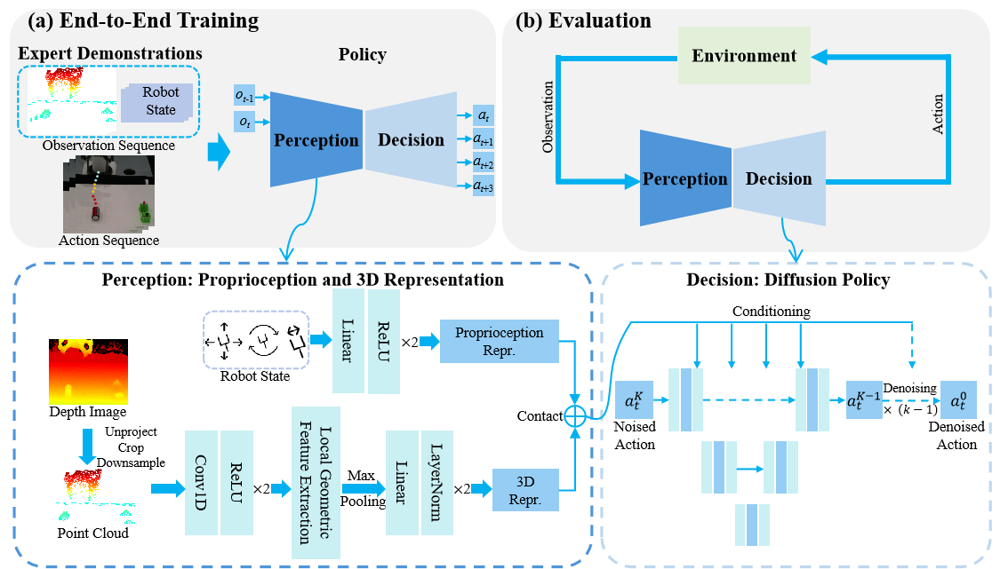

Method Overview
Overview of LGDP3
Above: (a) The policy is trained end-to-end using expert demonstrations. (b) During evaluation, the trained policy performs closed-loop control using environmental observations. Below: The Perception module extracts a 3D Representation from an input point cloud using an encoder featuring Conv1D layers and our core Local Geometric Feature Extraction module. Simultaneously, it encodes the robot state into a Proprioception Representation via an MLP. The Decision module, a diffusion-based backbone, conditions on these fused representations to generate the final action sequence through a denoising process.

Architecture of the Local Geometric Feature Extraction Module
This diagram illustrates the data flow for an input of N=1024 points with C=256 features. The Group block uses K-Nearest Neighbors (KNN) to find K=32 neighbors (a value determined by ablation), resulting in a (1024, 32, 256) tensor. The Pre Feature Extraction block then applies a shared module of Conv1D-ReLU layer. An Aggregate block performs Max Pooling to achieve permutation invariance and reduce the tensor to (1024, 256). Finally, the Post Feature Extraction block applies another Conv1D-ReLU layer to produce the final feature representation.